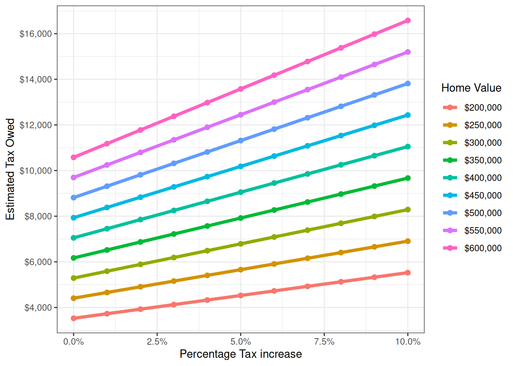
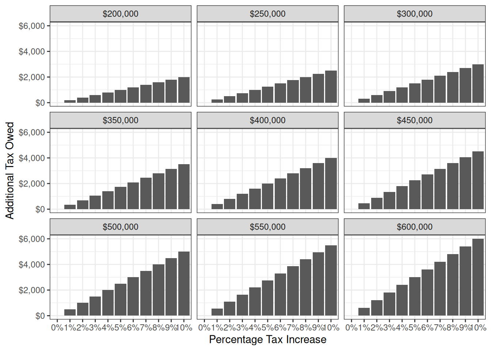
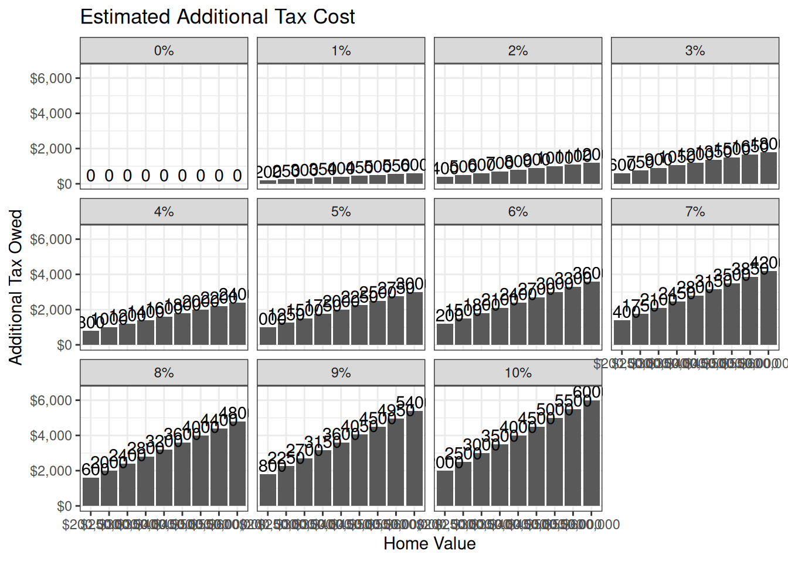
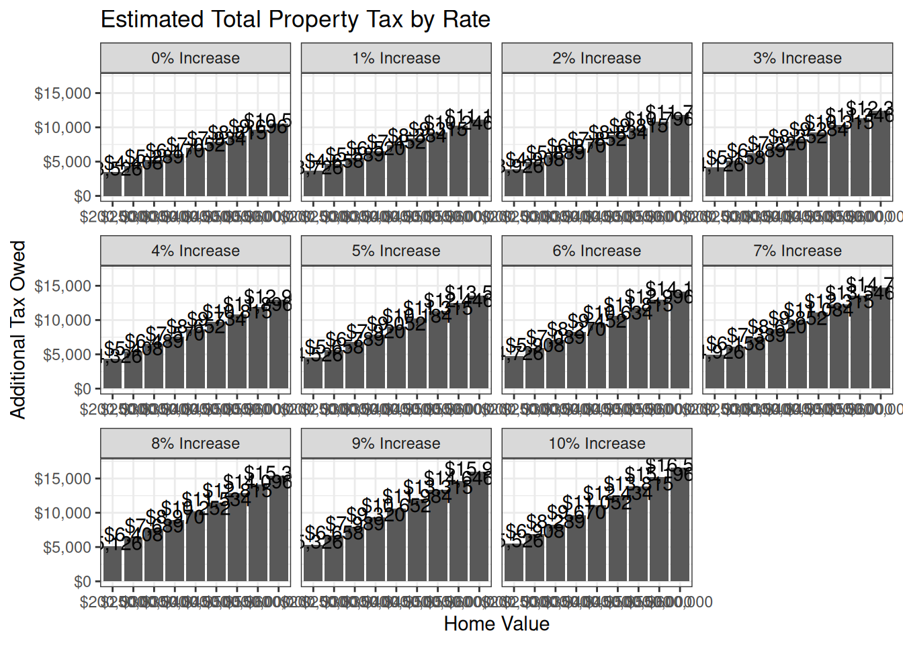

‘Nothing in life is certain except death and taxes’
This is true. We live in a community together that needs resources to provide shared goods. Our children go to school together, we drive roads together, we play at Bessie Rowell together, we have running water piped to our homes and sewers to take our waste. We have firefighters protect our lives and property from flames, and police officers to enforce the law. We have clerks that allow us to engage with state level bureaucracy.
All this and more costs money, and we all pay into via our taxes. In New Hampshire, the vast majority of tax revenue available to cities comes from property taxes - for people who own property, they pay a percentage of its value to the city in exchange for all of these services.
Paying for the above mentioned services is cheaper and more efficient when done collectively. Centralizing the costs of running water allow us to build a bigger (hopefully) more efficient system that can provide more or better service to rate payers. Higher taxes/more money in a system does not always result in better services or outcomes. Similarly the costs of these services pretty much continually increases: pieces of capital degrade as they are used (e.g. roads breaking down), costs of workers increase (salaries, health insurance etc), technological improvements deprecate systems adn demand replacement (e.g City website).
Whenever the city adds new pieces to it, be it services, developments, or workers, the total cost should be contemplated. Adding services then refusing to pay for the total cost is foolish, it undermines morale, and more quickly degrades capital. Every year, the city has to look at the tax revenue that can be collected and determine how to meet the service requests of its members. Time and again, city councils in the past have not grappled with the costs of the services offered and instead chosen to underfund different parts of the city.
I want to emphasize this: there is not, to my knowledge, a conspiracy or mismanagement that is restricting the City’s ability to fund itself at the level of service offered to its residents. Instead it is the natural outcome of a tax cap (spending limitation) that does not keep up with the real cost of different services.
We can and should have a sober discussion on what services we should offer (or not) instead of continual searching for malfeasance without evidence. Of course, the job of the city council is partially oversight, but fixating on fraud as the solution to the city’s funding issues is a waste of time. Instead the City council should evaluate service reductions, fee increases, tax increases, or restructuring to match the City needs with its finances. This is sustainable city management.
As we get into budget season, it will become more clear how much additional money we need to raise, or conversely, which services to reduce. Below I will show the expected cost of a range of tax increases for property owners. I’ll use the same assumptions as last year, as some components of the 2026 tax rate (like the equalization ratio, Consumer Price Index - Urban, county tax rate) have not been set yet. These numbers are wrong, but they may be useful as we contemplate paying for our city.
The tax rate in 2026 was $17.63 per $1,000 of assessed property value. I want to look at two sides of the equation how much does a given rate increase cost for a range of home values, and how much additional money might that bring in for the city of Franklin. TO start,




These two charts show how much a tax increase costs at each percentage step; it also shows the total amount of property tax owed for different property values. Every property owner is going to be different. These kinds of tax increases are hardest for two groups of people:

The council approved property tax revenue for 2026 is $20,284,966. 1% of the Property tax is approximately $200,000. As shown in the figure above, a 5% tax increase provides about a million dollars of additional revenue to the city. $1,000,000 is a lot of money, but it is not enough to meet projected school, road repair, police or fire needs.
Franklin’s chronic underinvestment and outstanding liabilities are large, and tax increases are not the only way to resolve the issue. They are a tool in the toolkit, and will likely need to be paired with service reductions.